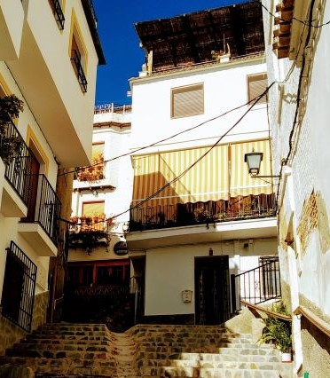

Spain | Historic travel
5 Historic sites in Andalucia
January 2020
From Christopher Columbus to the remnants of antiquity.
Introduction
Here are 5 historic sites you can visit in Andalucia, Spain.
1. Dolmen of Mengan
The Dolmen of Menga is a huge burrial tomb. It stems back to megalithic times (3750-3650 BCE) and is one of the largest burrial chambers in Europe. It is 27 meters long and includes some colossal pieces of stone.
2. Palos de la Frontera
In 1592, Christopher Columbus rediscovered the continent of America. This journey from the age of discovery had a starting point. And you guessed it... that was in Andalucia Spain. If you visit the harbor of Palos de la Frontera you can see replicas of 2 out of 3 ships that sailed in Columbus' voyages.
3. Alpujarras
The tiny region of Alpujarras is known for its fully white villages. The towns of Pampaneira, Bubión and Capileira are best known, but there are more towns with solely white houses (such as Mairena).These mountain villages were established by the Moorish invaders (the European term for Muslims used at the time) from the 8th century onwards.
An urban scene in the Alpujarras
4. Generalife Palace
Another settlement with Muslim roots is Generalife Palace. This site is one of the most visited tourist destinations in Andalucia. It is best known for its beautiful garden and exotic architecture.
5. Flamenco performance
The last 'site' on this list is Flamenco music. While it is not a set-in-stone part of Andalucia, it is one of its proudest heritage. In fact, it is so important and unique to the region, that it is listed as a Unesco world heritage. So, to see a Flamenco performance is a must-do when culturally exploring Andalucia.